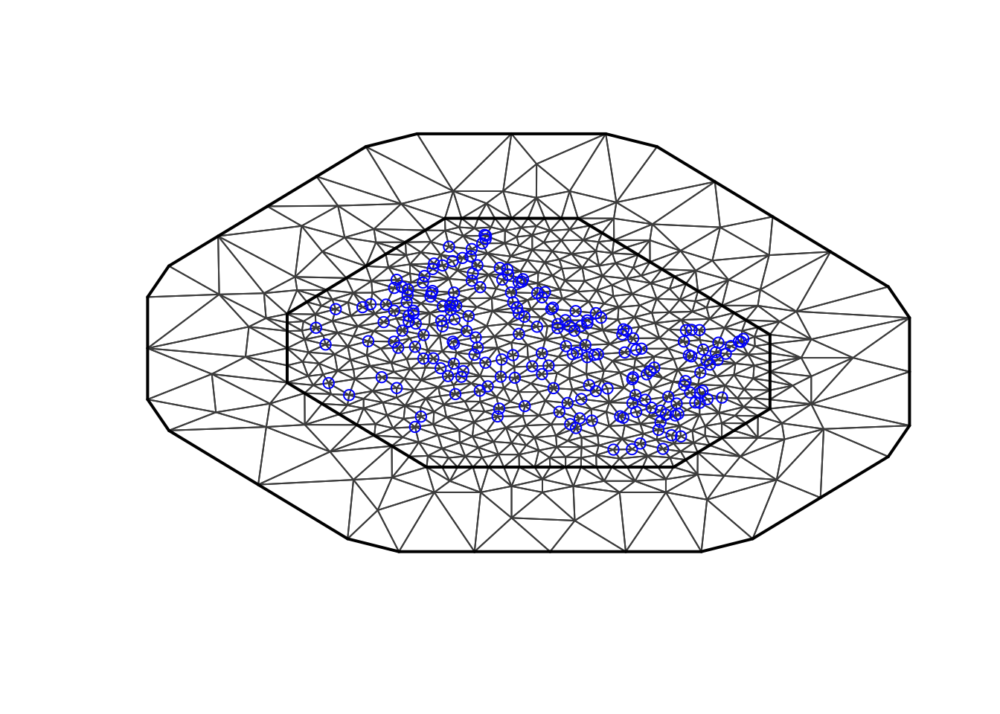
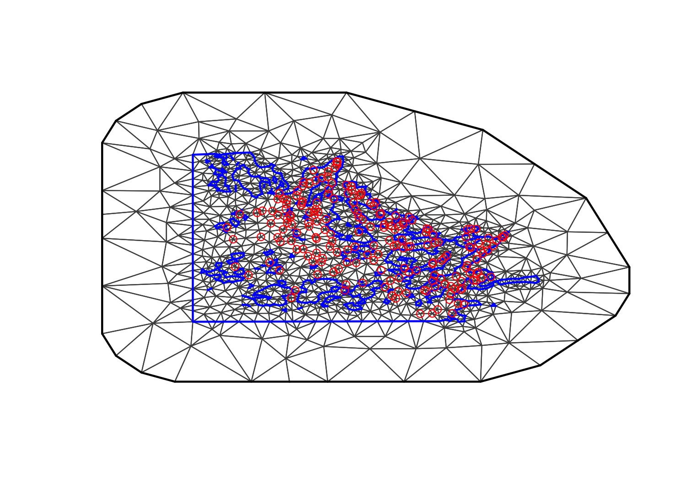

Mesh Creation including Coastlines
Haakon Bakka
BTopic104 updated 1/30/2017
1 About
This pages discusses mesh creating near a coastline. The discussion also includes the general tips.
1.1 Initialisation
We load the libraries and functions we need. You may need to install these libraries (Installation and general troubleshooting). Feel free to save the web location where the data is as an R-file on your computer. We also set random seeds to be used later.
library(INLA); library(sp)
set.seed(2016)
set.inla.seed = 20161.2 Download data
dir.create("data/")
download.file(url = "https://haakonbakkagit.github.io/data/WebSiteData-Archipelago.RData", destfile = "data/WebSiteData-Archipelago.RData")1.3 Load data
## Load data
load(file = "data/WebSiteData-Archipelago.RData")
# - if you have saved the file locally
## What is loaded
# - poly.water is our study area
# - df is our dataframe to be analysed
# - dat is the orginial dataframe
str(poly.water, 1)## Formal class 'SpatialPolygons' [package "sp"] with 4 slots1.4 Data citations
For a description of the data see (Kallasvuo, Vanhatalo, and Veneranta 2016). Data collection was funded by VELMU and Natural Resources Institute Finland (Luke).
2 Looking at our data
Let us first look at our study area, given by poly.water
of class SpatialPolygons. Note that the \(x\) and \(y\) (latitude and longitude) has already
been scaled to something nice for plotting (the data locations are also
scaled with the same scale).
summary(poly.water)## Object of class SpatialPolygons
## Coordinates:
## min max
## x 0 18
## y 0 13
## Is projected: NA
## proj4string : [NA]plot(poly.water, axes=T)
points(df$locx, df$locy, col="blue", cex=0.5)We look at our data.
summary(df)## y.smelt exposure locx locy
## Min. : 0 Min. :22.7 Min. : 1.7 Min. : 0.6
## 1st Qu.: 0 1st Qu.:22.7 1st Qu.: 6.2 1st Qu.: 4.2
## Median : 0 Median :22.7 Median : 8.7 Median : 6.4
## Mean : 2 Mean :24.6 Mean : 9.1 Mean : 6.3
## 3rd Qu.: 0 3rd Qu.:28.4 3rd Qu.:12.2 3rd Qu.: 8.3
## Max. :56 Max. :28.4 Max. :15.8 Max. :12.3
## dptLUKE dptavg15km dist30m joetdsumsq
## Min. :-1.0 Min. :-1.65 Min. :-1.33 Min. :0.00
## 1st Qu.:-0.7 1st Qu.:-0.74 1st Qu.:-0.78 1st Qu.:0.00
## Median :-0.3 Median :-0.09 Median :-0.17 Median :0.00
## Mean : 0.0 Mean : 0.00 Mean : 0.00 Mean :0.44
## 3rd Qu.: 0.5 3rd Qu.: 0.55 3rd Qu.: 0.67 3rd Qu.:1.00
## Max. : 4.5 Max. : 2.86 Max. : 2.54 Max. :1.00
## lined15km swmlog10 temjul15 year
## Min. :-2.46 Min. :-2.73 Min. :-1.14 Min. :0.00
## 1st Qu.:-0.67 1st Qu.:-0.73 1st Qu.:-0.75 1st Qu.:0.00
## Median :-0.11 Median : 0.07 Median :-0.35 Median :0.00
## Mean : 0.00 Mean : 0.00 Mean : 0.00 Mean :0.33
## 3rd Qu.: 0.86 3rd Qu.: 0.67 3rd Qu.: 0.48 3rd Qu.:1.00
## Max. : 2.04 Max. : 2.48 Max. : 2.89 Max. :1.00
## y.perch y.pikep
## Min. : 0.0 Min. : 0
## 1st Qu.: 0.0 1st Qu.: 0
## Median : 0.0 Median : 0
## Mean : 0.5 Mean : 4
## 3rd Qu.: 0.0 3rd Qu.: 2
## Max. :13.0 Max. :173Here, y.smelt is the counts of smelt larvae collected,
y.perch is the counts of perch larvae, and
y.pikep is the counts of pikeperch larvae. [TODO cite both
papers] All the other columns are covariates.
3 The simplest mesh
The simplest way to generate a mesh in INLA is to use the default settings.
max.edge = 0.95
# - some chosen constant
# - results should not be sensitive to this (if you have a good mesh)
# - max.edge = diff(range(df$locx))/15
mesh1 = inla.mesh.2d(loc=cbind(df$locx, df$locy),
max.edge = max.edge)
plot(mesh1, main="1st attempt"); points(df$locx, df$locy, col="blue")
3.1 What is needed for a good mesh?
- At least 1 spatial range between the boundary and any point [TODO: create a reference on the spatial range]
max.edgeless than 1/5 of the spatial range- No weird-looking parts of the mesh (usually fixed by
cutoff=max.edge/5)
However, you cannot know the range until you have fitted the model! In the beginning, I assume my range is about 1/3 of the study area.
For getting a feel for simple mesh creation, please run
demo("mesh2d") (created by Elias Krainski).
3.2 The simplest mesh, again
max.edge = 0.95
# - as before
bound.outer = 4.6
# - the outer boundary I want to use for my mesh
# - some chosen constant
# - results should not be sensitive to this
# - bound.outer = diff(range(df$locx))/3
mesh2 = inla.mesh.2d(loc=cbind(df$locx, df$locy),
max.edge = c(1,5)*max.edge,
# - use 5 times max.edge in the outer extension/offset/boundary
cutoff = max.edge/5,
offset = c(max.edge, bound.outer))
plot(mesh2, main="2nd attempt"); points(df$locx, df$locy, col="blue")
This mesh completely ignores the coastline. Then, the field exists also over land. However, that is no problem! The field over land is not considered a true underlying intensity, merely a computational tool. In other words, you are not allowed to have prediction locations on land.
There is, however, a problem, namely that the field smooths over
land, it borrows strength across land. This is not acceptable! See (Bakka et al. 2016). (If you are happy with
dependencies over land, you can use this mesh2. Just
remember to re-adjust the mesh after you have estimated the spatial
range.)
4 The coastline polygon mesh
We use the same settings as before, but we include the coastline
polygon as a boundary in the mesh creator.
max.edge = 0.95
# - as before
bound.outer = 4.6
# - as before
mesh3 = inla.mesh.2d(boundary = poly.water,
loc=cbind(df$locx, df$locy),
max.edge = c(1,5)*max.edge,
# - use 5 times max.edge in the outer extension/offset/boundary
cutoff = max.edge/5,
offset = c(max.edge, bound.outer))
plot(mesh3, main="3rd attempt"); points(df$locx, df$locy, col="red")
The problem here is that the coastline is not well represented. The cutoff destroyed the precision of the coastline!
Let us try a smaller cutoff and see if it improves the results. Note
that the cutoff is no longer given as a function of
max.edge; the cutoff’s main issue is no longer the data
locations, but is about the boundary polygon.
max.edge = 0.95
# - as before
bound.outer = 4.6
# - as before
mesh4 = inla.mesh.2d(boundary = poly.water,
loc=cbind(df$locx, df$locy),
max.edge = c(1,5)*max.edge,
# - use 5 times max.edge in the outer extension/offset/boundary
cutoff = 0.06,
offset = c(max.edge, bound.outer))
plot(mesh4, main="4th attempt", lwd=0.5); points(df$locx, df$locy, col="red")This looks good!
4.0.1 How computationally expensive is this?
The important number:
mesh4$n## [1] 6404The computational time grows proportional to this number \(n\) to the power \(\frac{3}{2}\).
4.0.2 Did we accidentally put observations on land?
in.water = over(poly.water, SpatialPoints(cbind(df$locx, df$locy)), returnList=T)[[1]]
print(paste("There are", nrow(df)-length(in.water), "points on land in the original polygon"))## [1] "There are 0 points on land in the original polygon"To check if any observations are on land when using the mesh, you
need to look at the code in BTopic107, and run the above snippet with
Omega.SP[[1]] instead of poly.water.
5 Comments and additional material
The code example above is complete. Here follows additional comments and information.
5.1 Comment A: Mesh construction is a gate
One big advantage with the mesh construction process is that it is a “gate”; you do not need to know how it was constructed, you can plot the mesh and check that it is sensible! Go to What is needed for a good mesh.
5.2 Comment B: Mesh contruction depends on inference
If the mesh is very fine (small enough
max.edge) and has a large outer extension, the inference can always be done, and the mesh does not depend on the result.But, if you want a computational mesh, you have to modify the mesh after running inference. This is not an inconsistency in the modeling approach, since it is only a computational issue. I recommend running inference at first with the settings above, then running inference, and looking at
inla.result$summary.hyperpar$meanand finding the posterior mean estimate for the range. Then, go back and redomax.edgeto be between 1/5 and 1/10 of this range. You can have a smallermax.edgebut this is just an unnecessary “waste of time”. Similarly, ensure the outer extension is close to the estimate for the range.References